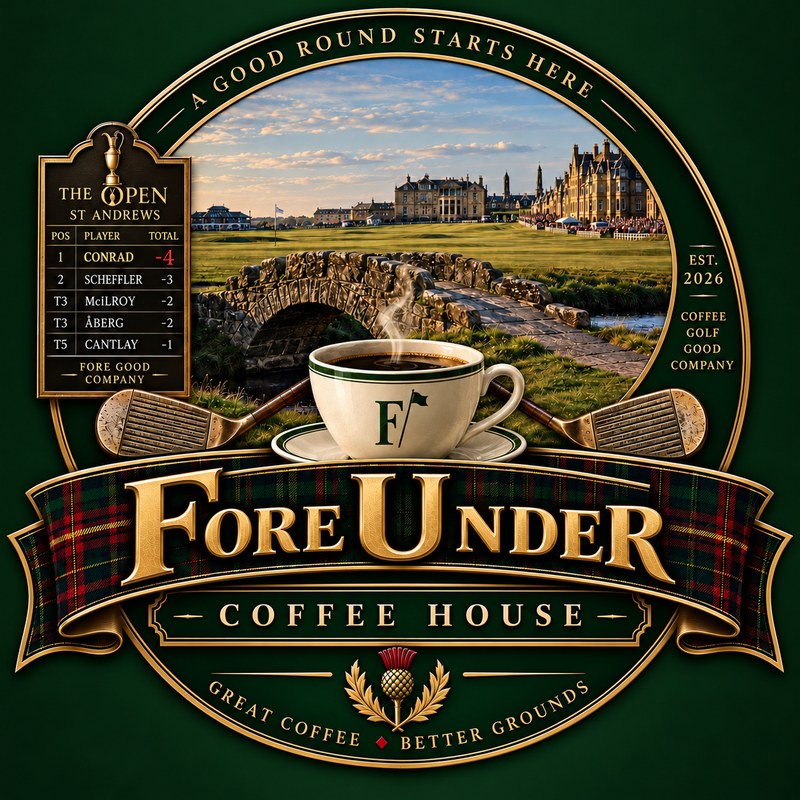

Foreunder Links
Everything for the coffee bar in one place.
For guests
Guest menu & orderingWhat the QR codes open. Beans, drinks, send an order.
foreunder.github.io/Coffee/menu/Screens
iPad mini table cardCrest + QR. Static, works on any iPad.
foreunder.github.io/Coffee/menu/table.htmlTable card with live queueSame as the table card plus "2 drinks in the queue". Newer iPads only.
foreunder.github.io/Coffee/menu/#tableOrders & machine
Order alerts (ntfy)Subscribe to this topic in the ntfy app so every order buzzes your phone.
foreunder-bar-q7m4x2k9vz4×6 table cardPrint at 100% on card stock for the walnut frame.
foreunder.github.io/Coffee/menu/card.htmlTag holder QR cardsTwo-sided ID-size card (crest + QR) for the clear tag holder on the table stand.
foreunder.github.io/Coffee/menu/tagcard.htmlLogs & trackers
Coffee Bean TrackerGoogle Sheet: every bag, roast date, status.
docs.google.com · Coffee Bean TrackerPurchase & Spend TrackerGoogle Sheet: espresso build and pub room spend.
docs.google.com · Purchase & Spend TrackerAdmin
Save this page: open it in Safari, tap Share, then Add to Home Screen. Pages on the Wi-Fi only (GaggiMate) won't open away from home.